There is something genuinely satisfying about making something beautiful out of a plain sheet of paper. Paper crafts for teens have come a long way from basic elementary school projects, and the ideas on this list are creative enough to hold a teenager's attention. Whether your teen loves artistic detail work, loves making things for their room, or just needs a fun afternoon activity away from screens, there is something here for every personality. ✂️
All of the ideas below use supplies you can easily find at a craft store or order online, and none of them require special training. Some take 20 minutes, some take an hour or two, but all of them produce something your teen will feel proud of when it's done.
What You'll Need
These supplies cover most of the ideas on this list, so stocking up once means your teen can jump between projects without interruption.
- Colored cardstock paper, thicker than regular paper and perfect for projects that need to hold their shape.
- Crayola Construction Paper, great for layered designs, cutting, folding, and mixing colors.
- Elmer's Glue Sticks, washable and reliable for most paper-to-paper projects.
- Mod Podge Matte, ideal for decoupage projects and sealing finished work so it lasts.
- Washi tape set, colorful decorative tape that adds detail and pattern without fuss.
- Sharpie fine point markers, for drawing clean lines, details, and outlines on finished pieces.
- Fiskars SoftGrip scissors, comfortable for older kids and teens doing a lot of cutting.
- A ruler and pencil, for measuring and marking clean folds and lines.
- Tape and string or thin ribbon, useful for mobiles, garlands, and hanging displays.
20 Paper Crafts for Teens to Try
1. Origami Lucky Stars
Cut long thin strips of paper and fold them into tiny five-pointed 3D stars, a classic and meditative craft that is surprisingly addictive once you get the technique down. Each star takes only a few minutes, and teens often end up making dozens in different colors to fill a glass jar or scatter across a shelf. It is one of those paper crafts for teens that looks impressive but is actually very doable once the fold sequence clicks. The repetition feels calming rather than boring, which makes it a great screen-free wind-down activity.
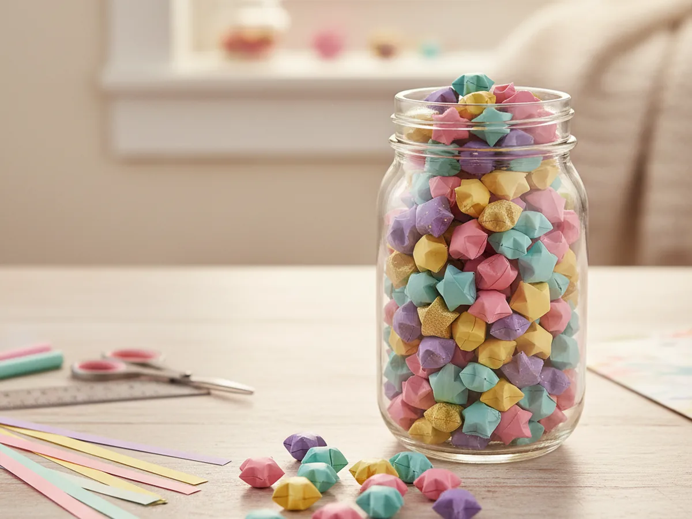
2. Paper Bead Bracelet
Cut long triangular strips from magazine pages, colorful cardstock, or patterned paper and roll each one tightly around a toothpick starting from the wide end, then seal with a dab of glue. Once dry, slide the beads off the toothpick and string them onto elastic cord to make a bracelet or necklace. This is one of those paper crafts for teens that turns out looking much more polished than it sounds, especially when you mix patterns and colors deliberately. Each bead is slightly different, which gives the finished piece a handmade charm that teens genuinely love wearing.
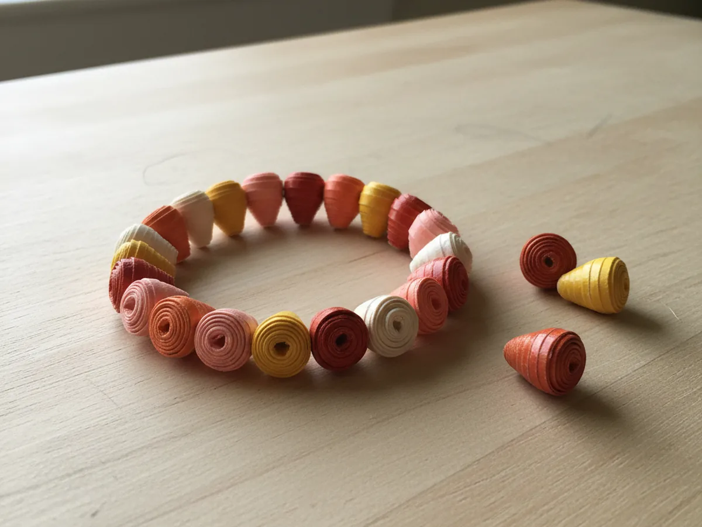
3. Washi Tape Wall Art
Use colorful washi tape to create geometric patterns, abstract designs, or simple line art directly on a piece of cardstock or stretched canvas paper. Tape down long straight lines, layer different widths and patterns, and fill in sections with color using markers or watercolors. The result looks modern and gallery-worthy without needing any drawing skill at all. 🎨 This is a favorite paper craft for teens who want something that looks seriously cool hanging on their bedroom wall but who may not feel confident in their drawing abilities.
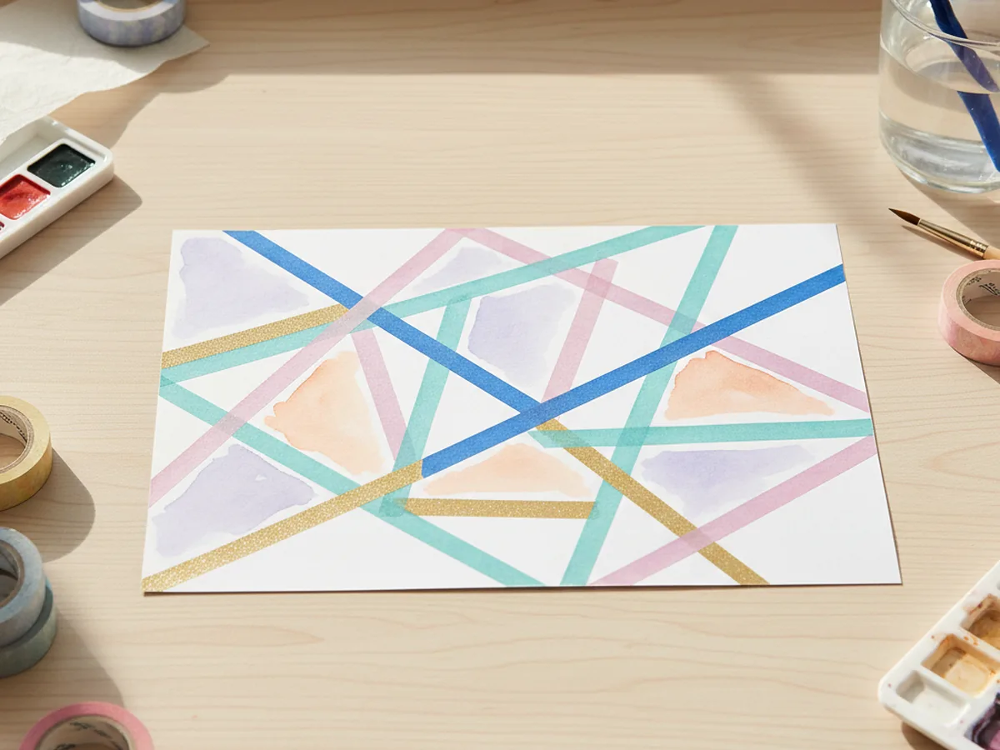
4. Quilling Art Card
Paper quilling involves rolling narrow strips of paper into tight coils, then pinching them into different shapes like teardrops, leaves, and spirals to build up a design. Teens can glue these shapes onto a folded cardstock card to create flowers, animals, or abstract patterns that look incredibly intricate and beautiful. Quilling requires patience and a steady hand, which makes it a satisfying challenge for teens who enjoy detailed craft work. The results are stunning enough to frame or give as a gift.
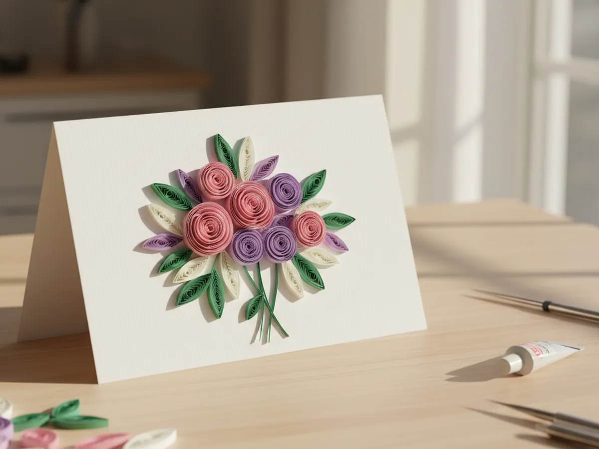
5. Decoupage Journal Cover
Take a plain hardcover notebook or journal and transform the cover using Mod Podge and torn or cut pieces of decorative paper, magazine clippings, washi tape, or printed images. Brush a layer of Mod Podge onto the cover, press the paper pieces down in any arrangement, then seal the whole surface with another layer of Mod Podge to give it a smooth, professional finish. This is one of those paper crafts for teens that feels very personal because the finished journal reflects exactly what they love. It also makes a thoughtful handmade gift.
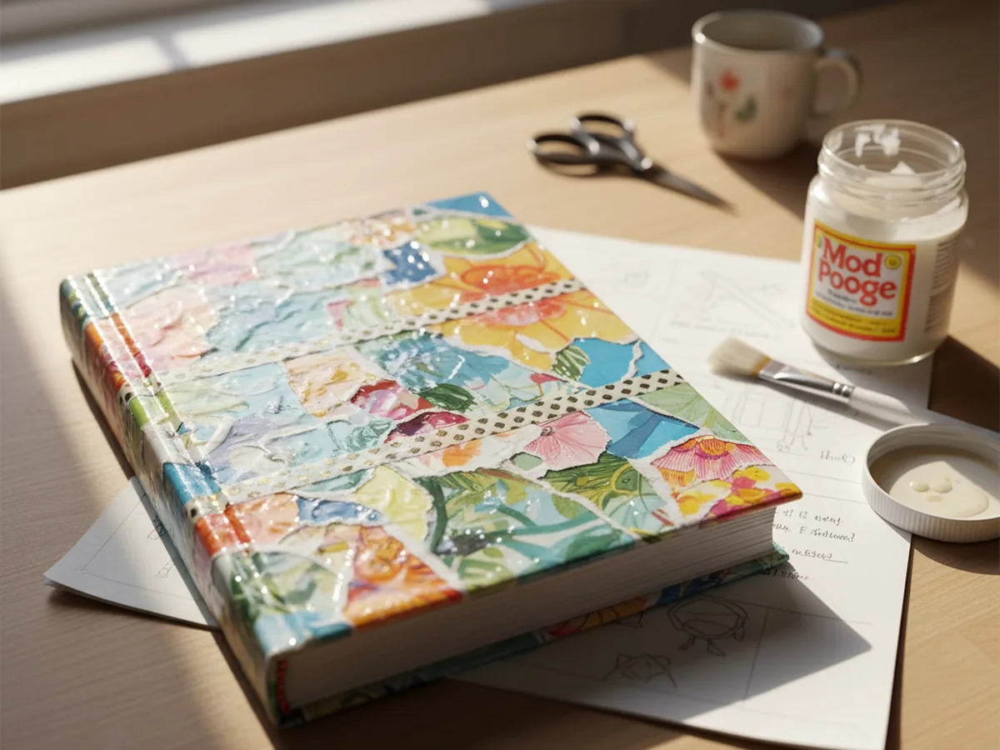
6. Origami Crane Mobile
Fold a collection of origami cranes in different sizes and colors from square sheets of paper, then hang them at varying heights from a piece of driftwood, a wooden dowel, or even a wire hanger using thin thread. A mobile made from 12 to 15 cranes looks stunning hanging in a bedroom window where the light catches the folds. According to Japanese tradition, folding 1,000 cranes is said to grant a wish, but even 15 looks magical. This is a beautiful paper craft for teens that doubles as real room decor.
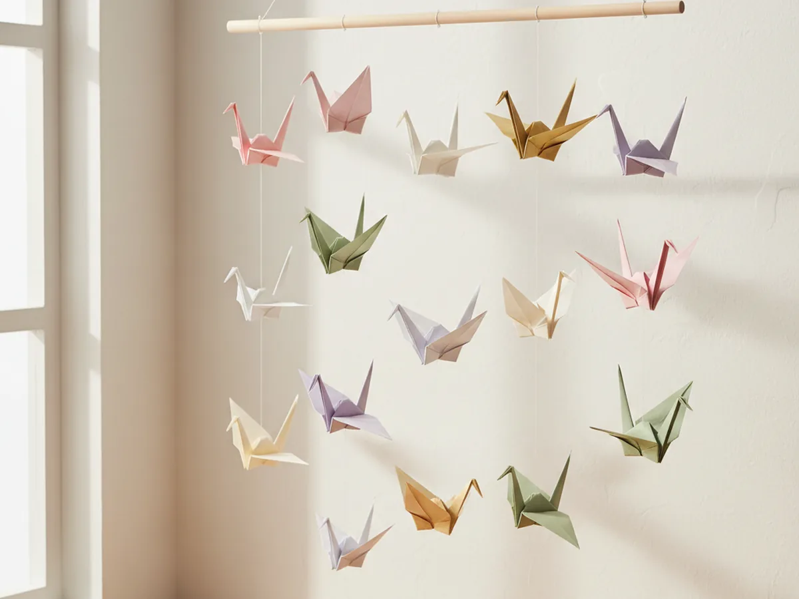
7. Paper Cut Silhouette Art
Print or draw a silhouette outline of an animal, cityscape, tree, or profile portrait onto black cardstock and carefully cut it out using small craft scissors or a craft knife. Mount the finished silhouette onto a bright or patterned background paper and frame it for an effect that looks like professional art. Teens who have a steady hand and enjoy precise detail work find this type of craft deeply satisfying. The contrast between the dark silhouette and a vivid background makes every finished piece look striking.
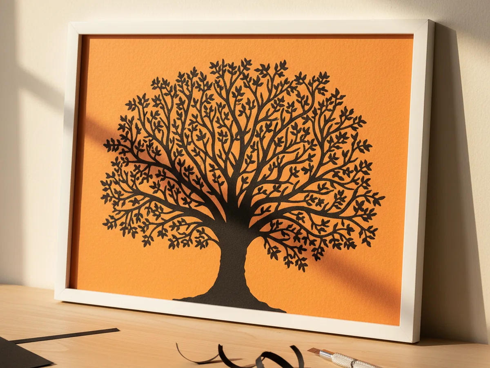
8. Paper Weaving Wall Hanging
Cut a piece of cardstock into evenly spaced vertical strips without cutting all the way to the edges, then weave horizontal strips of colored paper over and under through those slits in an alternating pattern. The finished piece has a woven textile look that works beautifully as wall art, especially when the colors are chosen intentionally. Teens can keep the colors tonal for a sophisticated look or go bold with contrasting shades. Adding fringe to the bottom edge or mounting the piece on a dowel gives it a finished, gallery-ready appearance.
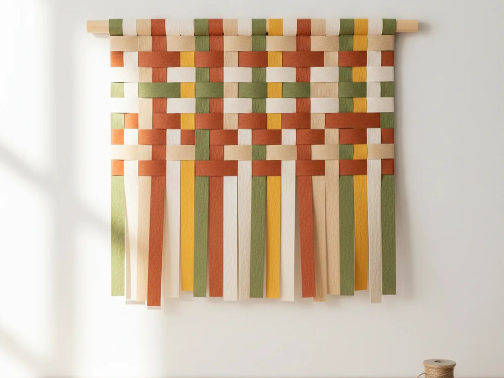
9. Mini Zine
A zine is a small handmade booklet, and one of the coolest things about it is that you can make a full 8-page mini zine from a single sheet of paper with just one fold and one cut. Teens can fill the pages with drawings, handwritten stories, lists of favorites, poetry, or collaged images from old magazines. It is one of the most expressive paper crafts for teens because there are no rules about what the content has to be. Making a series of zines on different themes is a great ongoing creative project.
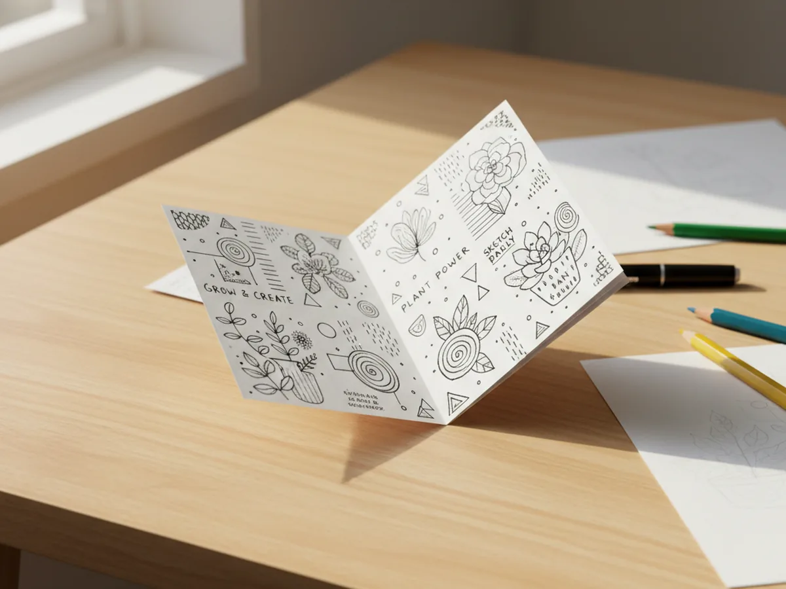
10. 3D Paper Star Decoration
Cut two identical star shapes from cardstock, make a single slit from the center to one point on each star, then slide the two shapes together at a 90-degree angle to create a 3D standing star. When made in larger sizes using metallic or patterned cardstock, these stars look stunning as table centerpieces or hanging ornaments. A cluster of them in different sizes makes a beautiful display for any occasion. This is one of those paper crafts for teens where the geometric result looks much more complex than the simple two-piece assembly actually is.
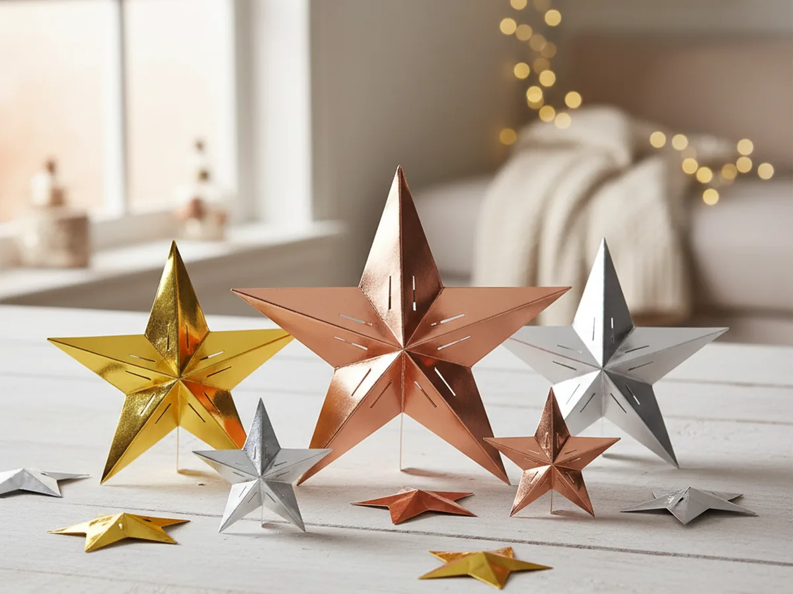
11. Geometric Paper Lantern
Score and fold a sheet of cardstock along a geometric pattern of triangular faces to create a faceted lantern shape, then secure the edges with small dots of glue and drop a battery-powered tea light inside for a soft warm glow. These geometric lanterns look like something from a design store and work beautifully as bedroom decor or a centerpiece. The scoring and folding process requires some patience but is very satisfying once the three-dimensional shape starts to take form. Teens who love geometric design or architecture often find this one especially rewarding.
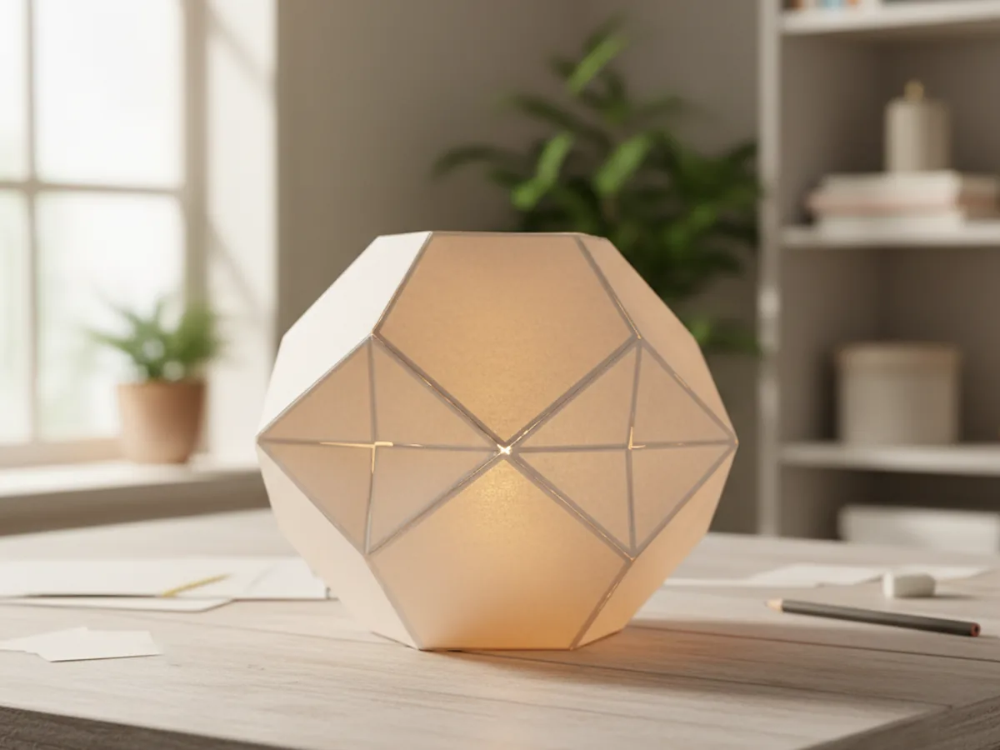
12. Paper Accordion Fan Bookmark
Accordion-fold a strip of colorful paper into a tight fan, then pinch one end together and wrap it with washi tape to hold the shape and form a handle. Slip the handle over the corner of a page and the fan sits open as a cheerful bookmark that is easy to spot and fun to use. Teens can personalize each one with patterns, drawings, or written words on individual folds. These are also quick to make in batches and make sweet handmade gifts for friends or teachers.
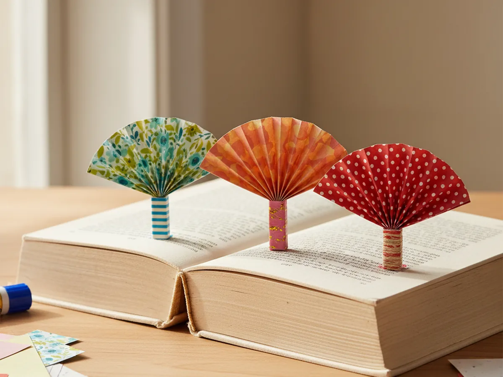
13. DIY Stationery Set
Design a matching set of notecards and envelopes using cardstock, washi tape borders, hand-lettered text, and small stamped or hand-drawn illustrations. Teens who love writing notes or letters find this craft especially meaningful because the end result is something they can actually use. Folding custom envelope shapes from decorative paper is easier than it looks and adds to the finished set. A complete stationery set also makes a genuinely impressive handmade gift that feels thoughtful and personal.
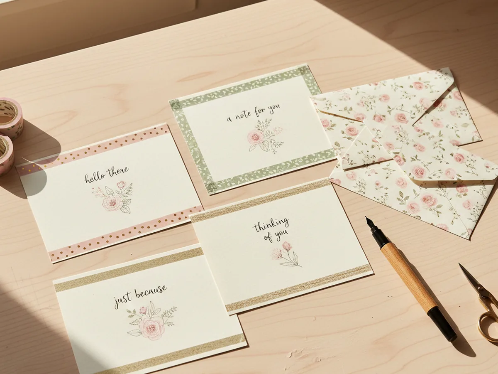
14. Paper Mosaic Art
Cut or tear small pieces of colored paper in different shades and glue them in a tight grid arrangement onto a background sheet to create a mosaic image, such as a simple animal outline, a landscape, or an abstract color study. The key is to keep the pieces small and consistent so the finished piece reads as a cohesive image from a distance. This is one of the most visually striking paper crafts for teens and also one of the most flexible, because the subject matter can be as simple or as complex as the teen wants.
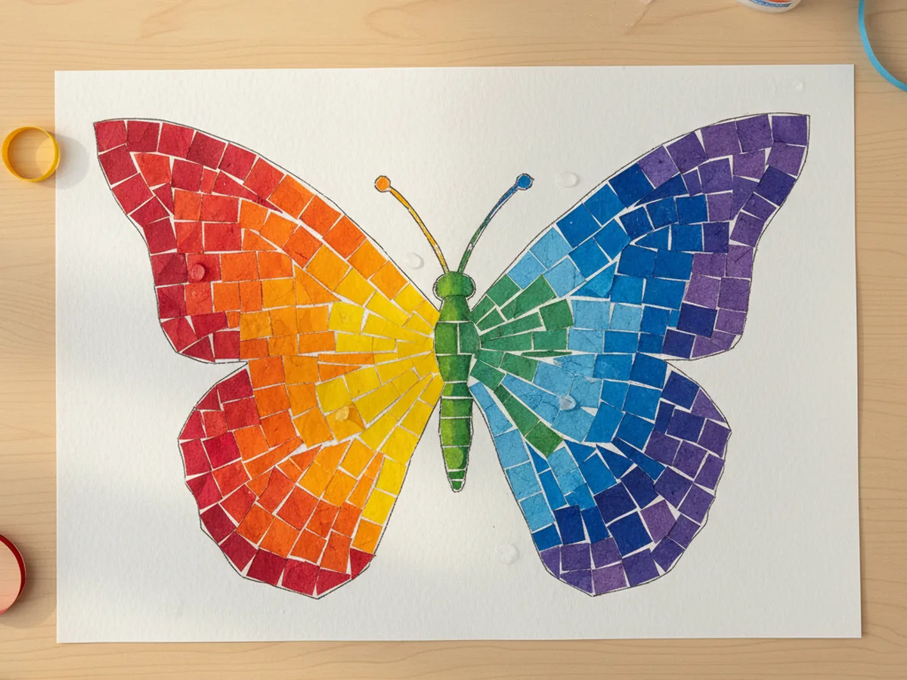
15. Paper Pinwheel
Cut a square of double-sided decorative paper, make diagonal cuts from each corner toward the center without cutting all the way through, then fold every other tip toward the center and secure with a brad fastener before attaching it to a pencil or thin wooden stick. The finished pinwheel spins beautifully in the breeze and makes a cheerful room or garden decoration. 🌟 Teens can make a whole bouquet of pinwheels in coordinating colors and display them in a vase or pot of dried beans for a fun statement piece.
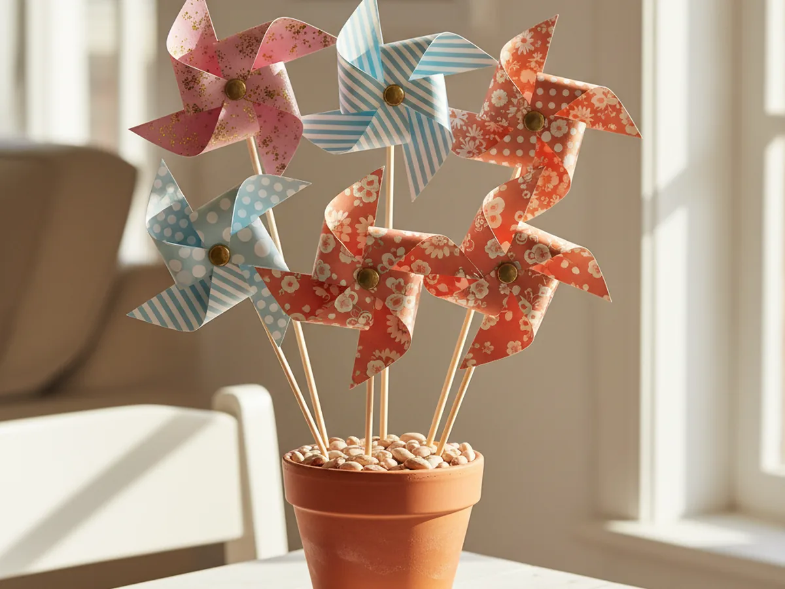
16. Paper Roll Desk Organizer
Collect empty toilet paper rolls and paper towel tubes in different heights, wrap each one with strips of washi tape, patterned paper, or layers of painted cardstock, and then glue them together in a cluster to create a stylish desk organizer. Taller tubes hold pens and markers while shorter ones keep small supplies like erasers, clips, and sticky note pads tidy. This is one of those practical paper crafts for teens that actually improves their workspace and gives them something genuinely useful rather than purely decorative. Choosing a cohesive color scheme makes the finished organizer look very pulled together.
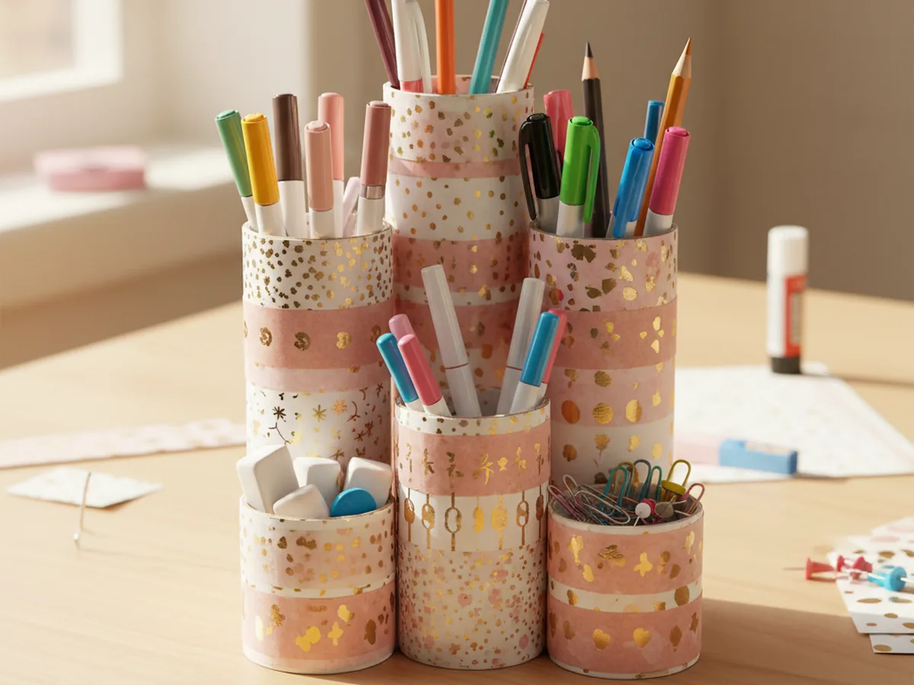
17. Origami Ninja Star
The classic origami shuriken is made from just two square pieces of paper folded into specific shapes and then slid together without any glue, which makes it one of the most satisfying folds for teens who love origami. The finished star is flat, precise, and looks impressively geometric for something made entirely from paper. Using two contrasting colors makes the interlocking design stand out even more. Once teens learn the steps they can fold one in just a few minutes, and the technique is easy to teach to friends.
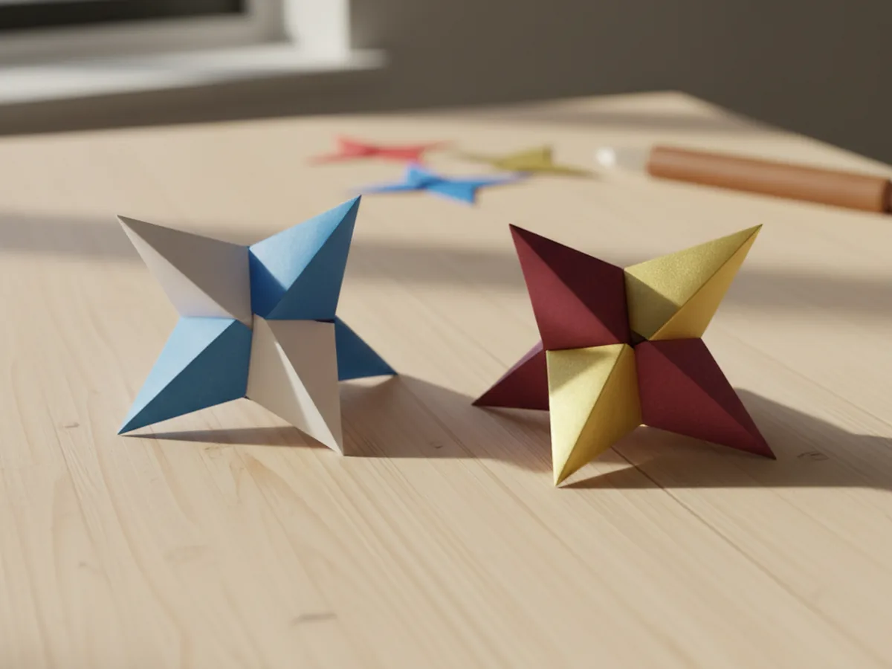
18. Paper Fortune Teller
The classic cootie catcher or paper fortune teller never goes out of style, and teens can make them feel fresh by designing the inside flaps with funny, thoughtful, or themed messages rather than the standard numbers and colors. Start with a square sheet of paper, fold the four corners to the center, flip and repeat, then fold in half twice and slip your fingers inside. The process is a nostalgic craft but the personalized content makes it feel new. A stack of custom fortune tellers with different themes like "weekend plans" or "what to read next" makes a fun set.
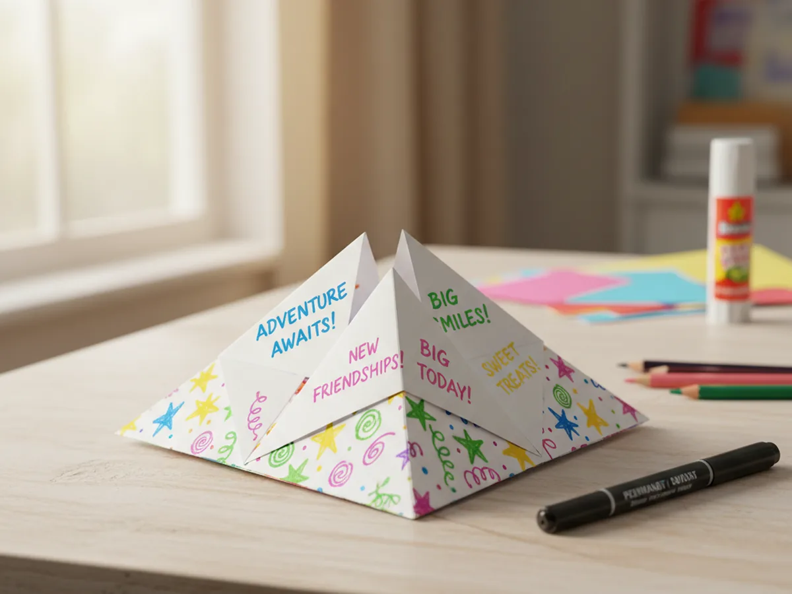
19. Layered Paper Shadow Box
Cut the same simple landscape scene, like silhouetted hills, trees, and a moon, at several different scales from sheets of paper in progressively lighter shades. Stack the layers inside a shadow box frame with small foam spacers between each layer to create depth and a three-dimensional diorama effect. The result looks like a piece of fine art and creates a beautiful focal point in any room. This is one of the most sophisticated paper crafts for teens on this list, and it rewards patience and planning with a truly impressive finished piece.
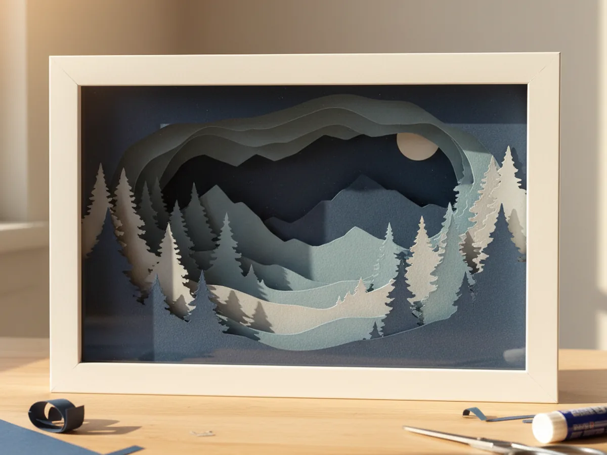
20. Paper Letter Art
Draw or print a large letter, initial, or word onto cardstock and cut it out as a solid shape. Then cover the surface by gluing on small torn strips of patterned paper, washi tape pieces, or colorful magazine clippings until the whole letter is covered in a mosaic-like collage of pattern and color. Finished letters can be displayed on a bookshelf, hung on a wall, or given as personalized gifts. Teens often make their own initial or a meaningful word, and the combination of cutting, arranging, and gluing makes it a pleasantly focused project.
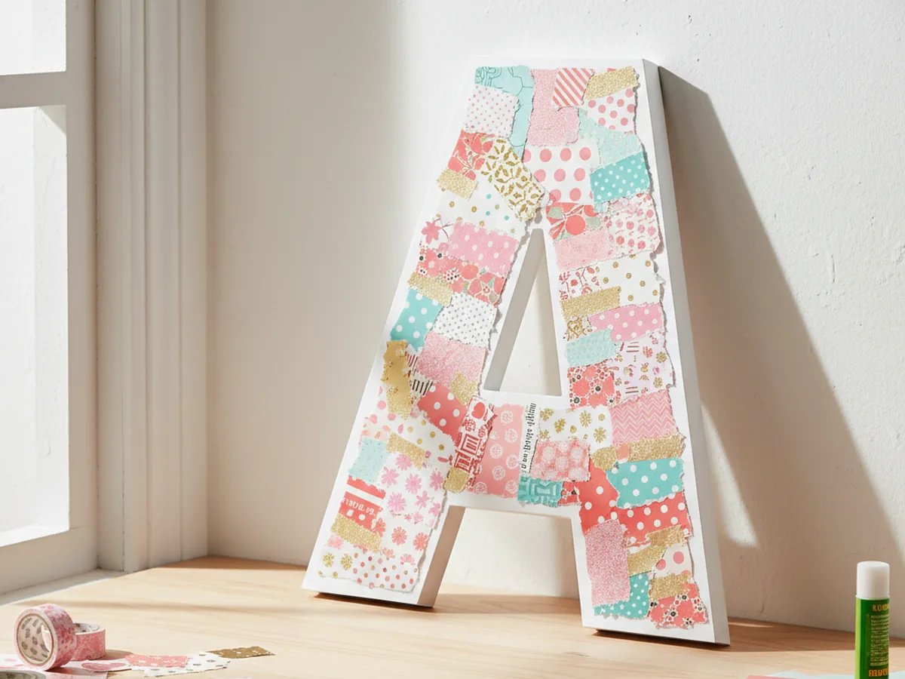
Final Thoughts
One of the best things about paper crafts for teens is that paper is genuinely forgiving. If something does not go the way they pictured it, you just start again with a fresh sheet. There is very little pressure, which makes it easier for teens to relax into the process and actually enjoy it. Whether they are making something for their room, giving it as a gift, or just doing it for the satisfaction of finishing something with their hands, any one of these 20 ideas is a great place to start. 💫
More Crafts You'll Love
If your teen enjoyed getting creative with paper, these articles have even more ideas to explore.
Happy crafting, and enjoy the creative time together.